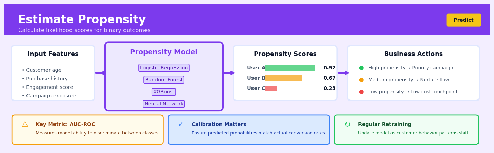
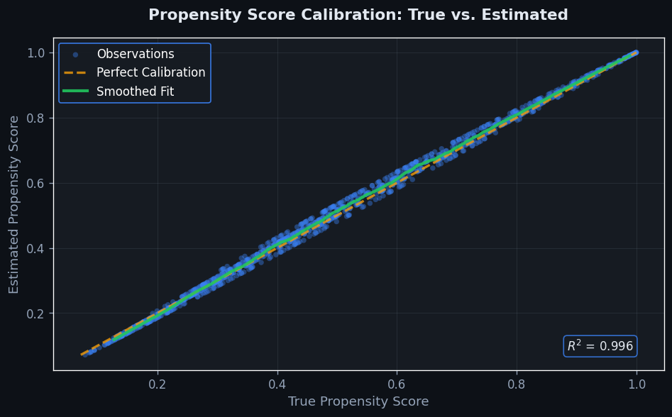
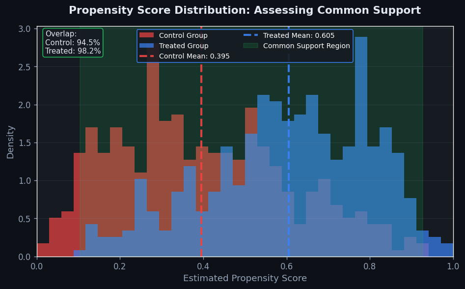

Estimate Propensity#


The biggest mistake I see with propensity models is treating them as set-and-forget predictors when they need continuous calibration monitoring. A model that's 85% accurate but poorly calibrated will generate propensity scores that don't reflect true probabilities, leading to disastrous targeting decisions where your "high propensity" segment converts at 40% instead of the predicted 80%. Always plot calibration curves and retrain when the gap between predicted and actual rates exceeds your business tolerance threshold.
The 60-Second Version#
What it does: Propensity estimation calculates the probability that each customer, patient, or unit will take an action or belong to a group based on their characteristics.
When to use it: You need to predict who is likely to respond to a treatment, buy a product, churn, or qualify for an intervention before you act.
What you get back: A score between 0 and 1 for each unit telling you how likely they are to experience the event, enabling you to prioritize, target, or adjust for selection bias.
Difficulty |
Moderate |
Typical runtime |
Seconds on 100K rows |
What you bring |
Historical data with outcomes (did/didn’t) and characteristics for each unit |
What you get |
A probability score (0–1) for each unit |
Heuristix bucket |
Predict — Machine Learning & Forecasting |
A propensity score tells you who is likely to do something, not who should receive an intervention—confusing the two leads to self-fulfilling prophecies and wasted resources.
Learning Objectives#
After reading this chapter, a business user will be able to:
Identify situations where propensity estimation is appropriate, such as predicting customer churn, targeting marketing campaigns, or stratifying populations for clinical trials based on likelihood of treatment assignment.
Interpret propensity scores as probabilities and explain to stakeholders how a score of 0.75 means “this customer has a 75% probability of converting” or “this patient is similar to those who typically receive treatment.”
Use propensity scores to prioritize which customers to contact, allocate budget across segments, or identify high-risk patients who require intervention, by ranking units from highest to lowest predicted probability.
After reading this chapter, a data scientist will be able to:
Implement propensity estimation using logistic regression or tree-based methods, handle class imbalance through sampling or weighting, and apply regularization to prevent overfitting when working with high-dimensional covariate spaces.
Tune the regularization strength (C or lambda), select optimal probability thresholds for classification, and balance the bias-variance tradeoff by choosing between simpler linear models and more flexible ensemble methods based on overlap diagnostics.
Validate propensity models by examining calibration curves, checking common support violations where predicted probabilities cluster at 0 or 1, and diagnosing positivity assumption failures that indicate certain covariate combinations have no representation in one treatment group.
Overview#
Propensity estimation is the task of predicting the probability that a unit (customer, patient, transaction) will experience a binary event or belong to a treatment group, conditional on observed covariates. At its core, the technique fits a classification model—most commonly logistic regression—to estimate \(P(T=1 \mid X)\), where \(T\) is the binary outcome or treatment indicator and \(X\) is a feature vector. Propensity scores belong to the family of supervised learning methods for binary classification and serve as a foundational building block for causal inference, uplift modelling, and targeted intervention design.
When to Use This#
Use this when you need to rank individuals by their likelihood of an event (e.g., churn, conversion, fraud) to prioritise outreach or investigation resources efficiently.
Use this when designing a causal study and you need propensity scores for matching, stratification, or inverse probability weighting to control for selection bias in observational data.
Use this when building an uplift model where you require baseline propensities before estimating heterogeneous treatment effects.
Use this when you want to understand which features most strongly predict group membership (e.g., who opts into a loyalty programme) for segmentation or profiling purposes.
Use this when regulatory or audit requirements demand an interpretable model with clear coefficients—logistic regression propensities satisfy this constraint while gradient boosted alternatives may not.
Use this when you need well-calibrated probabilities for downstream expected-value calculations (e.g., expected loss, expected lifetime value).
Use this when constructing synthetic control groups by selecting untreated units whose propensity distribution matches the treated group.
Do NOT use this when the outcome is multi-class or continuous—propensity estimation as defined here applies to binary events; use multinomial or regression models instead.
Do NOT use this when you have strong instrumental variables and wish to estimate causal effects via two-stage least squares; propensity methods and IV methods address different identification strategies.
Do NOT use this when the treatment assignment mechanism is known by design (e.g., a fully randomised A/B test)—propensity adjustment is unnecessary and may reduce precision.
Questions This Answers#
Targeting & Intervention Design#
Who should we target with our retention offer to get the best ROI?
If we only have budget to reach 10,000 customers this month, which ones are most likely to churn without intervention?
Should we send the discount campaign to everyone or just to customers who are on the fence about leaving?
Which patients are most likely to miss their follow-up appointments so we can call them in advance?
How do we identify which leads are actually interested versus just browsing, so sales focuses on the right people?
Treatment Effect & Causality#
Did our last marketing campaign actually work, or would those customers have converted anyway?
How do we know if the training program improved performance or if we just selected people who were already improving?
Are we wasting money sending promotions to customers who would buy without the discount?
If we roll out this new policy company-wide, how do we separate its real impact from other factors like seasonality?
Which group should get the new onboarding experience versus the standard one to measure true lift?
Resource Allocation & Prioritization#
We can only afford to offer premium support to 20% of our customer base—who gets it?
Should we invest more in acquiring new customers or preventing current ones from leaving?
How do we allocate our limited sales team across territories to maximize conversion rates?
Which accounts should our account managers focus on this quarter to prevent the biggest revenue losses?
How It Works#
Imagine you run a coffee shop and want to predict which customers walking past your door will actually come inside. You notice patterns: people carrying laptop bags stop in 60% of the time, people in business suits about 40%, and tourists with cameras only 15%. By watching hundreds of passers-by and recording who enters, you build a mental model that assigns each person a “likelihood of entering” score before they even reach your door. Propensity estimation works exactly this way—it learns from historical patterns to predict the probability that someone will take a particular action, join a particular group, or experience a particular outcome based on their characteristics.
TRAINING DATA MODEL LEARNS PATTERNS
┌─────┬─────┬────────┬──────┐
│ Age │ Inc │ Online │ Buy? │ Features → [Logistic] → Score
├─────┼─────┼────────┼──────┤ [Function]
│ 25 │ 40K │ Yes │ 1 │ Age=25 → → 0.73
│ 45 │ 80K │ No │ 0 │ Inc=40K → Pattern → (73%
│ 30 │ 55K │ Yes │ 1 │ Online → Matcher → prob)
│ 52 │ 90K │ No │ 0 │
└─────┴─────┴────────┴──────┘
Historical records Trained model
NEW CUSTOMER PREDICTION
┌─────┬─────┬────────┬───────────┐
│ Age │ Inc │ Online │ Propensity│
├─────┼─────┼────────┼───────────┤
│ 28 │ 48K │ Yes │ 0.68 │ ← Model assigns 68%
└─────┴─────┴────────┴───────────┘ probability of buying
Step 1: Collect historical data. Start by gathering records of past cases where you know both the characteristics of each person (age, income, location, browsing behavior) and whether they ultimately did the thing you care about—made a purchase, clicked an ad, responded to treatment, or belonged to a particular group. This becomes your training dataset.
Step 2: Choose the features that matter. Identify which characteristics might actually predict the outcome. Not everything is useful—someone’s favorite color probably doesn’t predict loan default, but their income and credit history do. Select the measurable attributes that have real predictive power.
Step 3: Fit a classification model. Feed your historical data into a statistical model, typically logistic regression. The model searches for patterns: it adjusts internal weights to find which combinations of features best separate the people who did the thing from those who didn’t. Think of it as drawing the best possible boundary through your data.
Step 4: Generate probability scores. Once trained, the model takes any new person’s characteristics and outputs a number between zero and one—their propensity score. A score of point-seven-five means this person has a seventy-five percent probability of the outcome, based on patterns the model learned from similar people in your historical data.
Step 5: Apply the scores for decision-making. Use these propensity scores to compare people fairly, target interventions efficiently, or adjust for selection bias. A high score flags someone likely to take the action; a low score suggests they probably won’t. The scores turn vague hunches into quantified predictions.
The key insight: Propensity estimation transforms messy historical patterns into clean probability scores, letting you predict individual behavior and make fair comparisons even when people start from different circumstances.
The Intuition#
Imagine you are a university admissions officer asked to evaluate whether a scholarship programme improves graduation rates. You cannot simply compare graduation rates between scholarship recipients and non-recipients because students who receive scholarships are systematically different: they may have higher grades, stronger recommendations, or greater financial need. Directly comparing outcomes conflates the effect of the scholarship with pre-existing differences—a classic case of selection bias.
Propensity estimation addresses this by first asking a simpler question: given everything we observe about a student, how likely were they to receive the scholarship? This probability is the propensity score. Students with similar propensity scores—whether they received the scholarship or not—are, in expectation, comparable on all observed characteristics. By matching, stratifying, or reweighting on these scores, we create an “apples-to-apples” comparison that isolates the treatment effect from confounding.
The elegance of the propensity score lies in dimension reduction. Instead of matching on dozens of covariates simultaneously (an exponentially difficult task), we collapse all covariate information into a single scalar: the estimated probability of treatment. Rosenbaum and Rubin (1983) proved that conditioning on this scalar is sufficient to remove bias from all observed confounders, provided the model is correctly specified. This is why propensity estimation is not merely a classification exercise—it is the first step in a principled causal inference pipeline.
The Mathematics#
Problem Setup and Notation#
Let \(\{(X_i, T_i)\}_{i=1}^{n}\) be an observed sample where:
\(X_i \in \mathbb{R}^{p}\) is a vector of pre-treatment covariates for unit \(i\).
\(T_i \in \{0, 1\}\) is the binary treatment indicator (or event indicator).
The propensity score is defined as:
Our goal is to estimate the function \(e(\cdot)\) from data.
Logistic Regression Model#
The most common specification assumes a logistic (logit) link function:
Equivalently:
where \(\beta \in \mathbb{R}^{p}\) is the vector of coefficients to be estimated.
Maximum Likelihood Estimation#
Given the Bernoulli likelihood for each observation, the log-likelihood is:
Substituting the logistic form:
The score function (gradient) is:
Setting this to zero yields the first-order condition. Since there is no closed-form solution, we use iterative methods—typically Newton-Raphson or iteratively reweighted least squares (IRLS).
The Hessian is:
This is negative semi-definite, guaranteeing that the log-likelihood is concave and the MLE is unique (when it exists).
Assumptions#
Unconfoundedness (Ignorability): \((Y(0), Y(1)) \perp T \mid X\). Conditional on observed covariates, treatment assignment is independent of potential outcomes. This is untestable and requires domain knowledge.
Overlap (Positivity): \(0 < e(X) < 1\) for all \(X\) in the support. Every unit must have a non-zero probability of receiving either treatment status.
Correct Specification: The functional form (e.g., logistic, linear in \(X\)) must adequately capture the true propensity. Misspecification biases downstream causal estimates.
Stable Unit Treatment Value Assumption (SUTVA): No interference between units; treatment of unit \(i\) does not affect outcomes of unit \(j\).
Propensity Score Theorem#
Rosenbaum and Rubin (1983) established the balancing property:
This means that within strata defined by the propensity score, the distribution of covariates is the same for treated and control units. Consequently:
under unconfoundedness. This justifies using \(e(X)\) rather than \(X\) directly for bias removal.
Inverse Probability Weighting (IPW)#
One application of propensity scores is IPW estimation of the Average Treatment Effect (ATE):
This reweights observations to create a pseudo-population where treatment is independent of \(X\).
Edge Cases and Degeneracies#
Perfect Separation: If a linear combination of \(X\) perfectly predicts \(T\), the MLE does not exist (coefficients diverge to \(\pm \infty\)). Regularisation (L1/L2 penalties) or Firth’s penalised likelihood resolves this.
Extreme Propensities: When \(\hat{e}(X_i) \approx 0\) or \(\approx 1\), IPW weights explode, causing high variance. Trimming (excluding units with \(\hat{e} < \epsilon\) or \(> 1-\epsilon\)) or stabilised weights mitigate this.
High-Dimensional \(X\): When \(p\) is large relative to \(n\), overfitting propensities can paradoxically increase bias in causal estimates. Cross-validation or regularisation is essential.
Relationship to Other Methods#
Discriminant Analysis: Linear discriminant analysis also estimates \(P(T=1 \mid X)\) but assumes Gaussian class-conditional densities with equal covariance.
Gradient Boosting / Random Forests: Non-parametric classifiers can estimate propensities with greater flexibility but sacrifice interpretability and may overfit in high dimensions.
Doubly Robust Estimation: Combines propensity models with outcome models; consistent if either is correctly specified.
Understanding the Mathematics#
The Logistic Function#
Read it aloud: The probability that treatment equals one given our features equals one divided by one plus e raised to the negative power of the sum of an intercept plus each coefficient multiplied by its corresponding feature.
What each symbol means:
\(P(T=1 \mid X)\) = the probability a unit receives treatment (or has the outcome), given the features we observe
\(e\) = Euler’s number (approximately 2.718), the base of natural logarithms
\(\beta_0\) = the intercept or baseline log-odds when all features are zero
\(\beta_1, \beta_2, \ldots, \beta_p\) = coefficients that weight each feature’s importance
\(X_1, X_2, \ldots, X_p\) = the feature values (age, income, past purchases, etc.)
A concrete numerical example: Imagine predicting whether a customer will click an advertisement. We have \(\beta_0 = -2.5\), \(\beta_1 = 0.8\) (for prior visits), and \(\beta_2 = 0.05\) (for age in years). A 40-year-old customer with 3 prior visits gives us:
Inside the exponent: \(-2.5 + 0.8(3) + 0.05(40) = -2.5 + 2.4 + 2.0 = 1.9\)
Probability: \(\frac{1}{1 + e^{-1.9}} = \frac{1}{1 + 0.150} = \frac{1}{1.150} = 0.87\) or 87%
Why this equation matters: The logistic function transforms any linear combination into a valid probability (between 0 and 1), enabling us to estimate propensities for targeting decisions rather than just predicting arbitrary scores.
The Log-Odds (Logit) Form#
Read it aloud: The natural logarithm of the probability of treatment divided by the probability of no treatment equals the intercept plus the weighted sum of all features.
What each symbol means:
\(\frac{P(T=1 \mid X)}{1 - P(T=1 \mid X)}\) = the odds ratio (probability of treatment over probability of no treatment)
\(\log\) = the natural logarithm
Right side = a linear equation, just like ordinary regression
A concrete numerical example: Using our previous ad-click scenario where we calculated \(P(T=1) = 0.87\):
The odds are: \(\frac{0.87}{1 - 0.87} = \frac{0.87}{0.13} = 6.69\)
The log-odds: \(\log(6.69) = 1.9\)
Notice this equals our earlier calculation: \(-2.5 + 0.8(3) + 0.05(40) = 1.9\)
Why this equation matters: This transformation reveals that logistic regression is actually linear in log-odds space, making coefficients interpretable as additive effects on odds and enabling standard optimization techniques to find the best parameters.
Maximum Likelihood Estimation#
Read it aloud: The likelihood of our coefficients equals the product across all observations where, for each observation, we multiply the predicted probability if treatment occurred or one minus the predicted probability if treatment didn’t occur.
What each symbol means:
\(\mathcal{L}(\beta)\) = the likelihood (how well parameters explain observed data)
\(\prod_{i=1}^{n}\) = multiply together for all \(n\) observations
\(T_i\) = the actual treatment value (1 or 0) for observation \(i\)
The exponents \(T_i\) and \(1-T_i\) select which probability to use
A concrete numerical example: With 3 customers where we predict probabilities [0.87, 0.45, 0.12] and observe outcomes [1, 0, 0]:
\(\mathcal{L} = 0.87^1 \times (1-0.87)^0 \times 0.45^0 \times (1-0.45)^1 \times 0.12^0 \times (1-0.12)^1\)
\(= 0.87 \times 1 \times 1 \times 0.55 \times 1 \times 0.88 = 0.421\)
Why this equation matters: Finding coefficients that maximize this likelihood gives us the most statistically defensible propensity estimates—the parameter values that make our observed data most probable.
The Big Picture#
The mathematics of propensity estimation achieves one fundamental goal: converting features into well-calibrated probabilities that respect the constraints of probability theory (always between 0 and 1, summing correctly). We use logistic regression rather than simpler approaches because it naturally handles the bounded nature of probabilities while maintaining mathematical properties that make estimation tractable—specifically, the log-odds transformation creates a linear relationship we can optimize efficiently. At its heart, this math is asking: “What weights on our features make the patterns we observed in the data most likely to have occurred?”
Python Implementation#
import numpy as np
import pandas as pd
from sklearn.linear_model import LogisticRegression
from sklearn.ensemble import GradientBoostingClassifier
from sklearn.model_selection import cross_val_predict
from sklearn.calibration import calibration_curve
from sklearn.metrics import roc_auc_score, brier_score_loss
import matplotlib.pyplot as plt
# -----------------------------
# 1. Generate Synthetic Data
# -----------------------------
np.random.seed(42)
n = 2000
# Covariates
age = np.random.normal(45, 12, n)
income = np.random.exponential(50000, n)
tenure = np.random.poisson(5, n)
# True propensity: probability of receiving marketing treatment
linear_pred = -2 + 0.03 * age + 0.00002 * income + 0.1 * tenure
true_propensity = 1 / (1 + np.exp(-linear_pred))
treatment = np.random.binomial(1, true_propensity)
# Assemble DataFrame
df = pd.DataFrame({
'age': age,
'income': income,
'tenure': tenure,
'treatment': treatment
})
X = df[['age', 'income', 'tenure']]
T = df['treatment']
print(f"Treatment prevalence: {T.mean():.2%}")
print(f"Sample size: {n}\n")
# -----------------------------
# 2. Fit Logistic Regression
# -----------------------------
lr_model = LogisticRegression(solver='lbfgs', max_iter=1000)
lr_model.fit(X, T)
# Extract coefficients
coef_df = pd.DataFrame({
'feature': X.columns,
'coefficient': lr_model.coef_[0],
'odds_ratio': np.exp(lr_model.coef_[0])
})
print("Logistic Regression Coefficients:")
print(coef_df.to_string(index=False))
print(f"Intercept: {lr_model.intercept_[0]:.4f}\n")
# Predict propensity scores
df['propensity_lr'] = lr_model.predict_proba(X)[:, 1]
# -----------------------------
# 3. Fit Gradient Boosting (Alternative)
# -----------------------------
gb_model = GradientBoostingClassifier(
n_estimators=100,
max_depth=3,
learning_rate=0.1,
random_state=42
)
gb_model.fit(X, T)
df['propensity_gb'] = gb_model.predict_proba(X)[:, 1]
# -----------------------------
# 4. Evaluate Model Performance
# -----------------------------
print("Model Evaluation Metrics:")
print("-" * 40)
for name, col in [('Logistic Regression', 'propensity_lr'),
('Gradient Boosting', 'propensity_gb')]:
auc = roc_auc_score(T, df[col])
brier = brier_score_loss(T, df[col])
print(f"{name}:")
print(f" AUC-ROC: {auc:.4f}")
print(f" Brier Score: {brier:.4f}")
# -----------------------------
# 5. Check Calibration
# -----------------------------
fig, axes = plt.subplots(1, 2, figsize=(12, 5))
for ax, (name, col) in zip(axes, [('Logistic Regression', 'propensity_lr'),
('Gradient Boosting', 'propensity_gb')]):
prob_true, prob_pred = calibration_curve(T, df[col], n_bins=10)
ax.plot(prob_pred, prob_true, marker='o', label='Model')
ax.plot([0, 1], [0, 1], 'k--', label='Perfect calibration')
ax.set_xlabel('Mean predicted probability')
ax.set_ylabel('Fraction of positives')
ax.set_title(f'Calibration Curve: {name}')
ax.legend()
plt.tight_layout()
plt.savefig('calibration_curves.png', dpi=150)
plt.show()
# -----------------------------
# 6. Check Covariate Balance After Weighting
# -----------------------------
# IPW weights for ATE estimation
df['weight_treated'] = 1 / df['propensity_lr']
df['weight_control'] = 1 / (1 - df['propensity_lr'])
# Standardised mean difference before weighting
def smd(x, t):
treated = x[t == 1]
control = x[t == 0]
pooled_std = np.sqrt((treated.var() + control.var()) / 2)
return (treated.mean() - control.mean()) / pooled_std
print("\nCovariate Balance (Standardised Mean Difference):")
print("-" * 50)
for col in ['age', 'income', 'tenure']:
raw_smd = smd(df[col], T)
# Weighted means
treated_weighted_mean = np.average(
df.loc[T == 1, col],
weights=df.loc[T == 1, 'weight_treated']
)
control_weighted_mean = np.average(
df.loc[T == 0, col],
weights=df.loc[T == 0, 'weight_control']
)
# For simplicity, use unweighted pooled SD
pooled_std = np.sqrt((df.loc[T == 1, col].var() + df.loc[T == 0, col].var()) / 2)
weighted_smd = (treated_weighted_mean - control_weighted_mean) / pooled_std
print(f"{col}: Raw SMD = {raw_smd:.4f}, Weighted SMD = {weighted_smd:.4f}")
# -----------------------------
# 7. Display Propensity Distribution
# -----------------------------
fig, ax = plt.subplots(figsize=(8, 5))
ax.hist(df.loc[T == 1, 'propensity_lr'], bins=30, alpha=0.6,
label='Treated', density=True)
ax.hist(df.loc[T == 0, 'propensity_lr'], bins=30, alpha=0.6,
label='Control', density=True)
ax.set_xlabel('Propensity Score')
ax.set_ylabel('Density')
ax.set_title('Propensity Score Distribution by Treatment Group')
ax.legend()
plt.savefig('propensity_distribution.png', dpi=150)
plt.show()
print("\nPropensity Score Summary Statistics:")
print(df.groupby('treatment')['propensity_lr'].describe())
Visualisations#


Using This in Heuristix#
Data Inputs#
Connect a single dataset node containing:
Column Type |
Description |
Required |
|---|---|---|
Target |
Binary column (0/1 or boolean) indicating treatment/event status |
Yes |
Features |
Numeric or categorical columns representing pre-treatment covariates |
Yes |
ID |
Config Recipes#
Recipe 1: Quick Exploration for Balanced Data#
When to use: Initial analysis with roughly equal class sizes (30–70% prevalence) when you need results in minutes, not hours.
Settings:
Parameter |
Value |
Why |
|---|---|---|
|
|
Fast training, interpretable coefficients |
|
|
Sufficient for convergence on clean data |
|
|
Best general-purpose optimizer for small-medium datasets |
|
|
Balanced data doesn’t need reweighting |
|
|
Faster than 5-fold, adequate for initial assessment |
|
|
Skip to reduce preprocessing time |
What you get: Baseline propensity scores in under 5 minutes with interpretable feature weights for quick stakeholder communication.
Trade-off: May underfit complex interactions and provides no regularization against overfitting on noisy features.
Recipe 2: Production-Grade with Imbalanced Classes#
When to use: Deploying to production systems where treatment/event rates are below 10% and model reliability is critical.
Settings:
Parameter |
Value |
Why |
|---|---|---|
|
|
Handles imbalance and interactions better than linear models |
|
|
High enough for stable predictions |
|
|
Slow learning reduces overfitting |
|
|
Prevents memorization of rare events |
|
|
Adds stochasticity for robustness |
|
|
Corrects for class imbalance |
|
|
Standard for reliable performance estimates |
|
|
Ensures probabilities match observed frequencies |
What you get: Well-calibrated propensity scores (Brier score < 0.15) that perform reliably on rare events.
Trade-off: Training takes 10–50x longer and model is not directly interpretable without SHAP analysis.
Recipe 3: High-Dimensional Sparse Features#
When to use: Text embeddings, one-hot encoded categorical variables, or genomic data with thousands of features but few truly predictive.
Settings:
Parameter |
Value |
Why |
|---|---|---|
|
|
Handles high dimensionality efficiently |
|
|
Forces sparse solutions, automatic feature selection |
|
|
Strong regularization for many irrelevant features |
|
|
Only solver supporting L1 penalty at scale |
|
|
High-dimensional problems need more iterations |
|
|
Pre-filter to top predictors before modeling |
What you get: Sparse model with 50–200 active features that generalizes well despite high-dimensional input.
Trade-off: May miss weak multiplicative effects between features that individually appear unimportant.
Recipe 4: Covariate Balance for Causal Inference#
When to use: Building propensity scores specifically for inverse probability weighting (IPW) or matching, where balance matters more than pure predictive accuracy.
Settings:
Parameter |
Value |
Why |
|---|---|---|
|
|
Smooth probabilities avoid extreme weights |
|
|
Prevents extreme coefficients that create unstable weights |
|
|
Moderate regularization balances fit and stability |
|
|
Truncates extreme weights that destabilize IPW |
|
|
Improves balance on interaction terms |
|
|
Directly measures covariate balance, not AUC |
What you get: Propensity scores that minimize covariate imbalance (SMD < 0.1) across treatment groups for valid causal estimates.
Trade-off: Lower predictive accuracy (AUC may be 0.65–0.75) but superior performance for the actual causal inference task.
Business Applications#
Financial Services
A mid-sized UK mortgage lender needs to decide which loan applicants to fast-track through automated underwriting versus which require manual review. By estimating each applicant’s propensity to default conditional on credit bureau data, income verification, and property characteristics, the lender routes low-risk applications (propensity < 0.08) to instant approval and reserves specialist time for borderline cases. This approach reduced processing time from 4 days to 45 minutes for 62% of applications while maintaining the same default rate, saving approximately £840,000 annually in underwriting costs.
Retail
An e-commerce fashion retailer with 450,000 active customers wants to prevent cart abandonment without discounting promiscuously. Propensity models estimate the probability each shopper will complete checkout within 24 hours based on browsing behavior, cart value, past purchase frequency, and time-of-day patterns. Customers with propensity scores between 0.3 and 0.6—the “persuadable middle”—receive targeted free-shipping offers, lifting conversion from 38% to 51% in that segment while preserving margin on high-propensity buyers who would have converted anyway.
Healthcare
A regional hospital network serving 280,000 patients annually struggles with no-show rates for specialist appointments that waste £3.2M in unused clinical capacity. By estimating each patient’s propensity to miss their appointment based on historical attendance, travel distance, appointment lead time, and demographic factors, the network implements differentiated reminder strategies: high-risk patients (propensity > 0.4) receive SMS reminders plus a phone call 48 hours prior, while low-risk patients get email only. No-show rates dropped from 18% to 11%, recovering approximately £1.4M in annual clinical productivity.
Insurance
A commercial property insurer needs to prioritize which policyholders to contact for mid-term risk inspections when engineering resources are constrained. Propensity models estimate the likelihood of claims in the next 12 months conditional on property age, sector, location, claims history, and external data like weather patterns. Inspectors visit the top 15% highest-propensity risks first, identifying and remediating hazards that reduced claims frequency by 22% and saved £2.7M in loss costs in the first year.
Manufacturing
A pharmaceutical contract manufacturer wants to reduce batch failures that cost \(180,000–\)450,000 each in destroyed product and schedule disruption. Engineers build propensity models predicting batch failure probability based on raw material supplier, ambient temperature and humidity during processing, equipment maintenance logs, and operator shift patterns. Batches with failure propensity above 0.12 trigger additional in-process quality checks and supervisor oversight, cutting failure rates from 3.8% to 1.4%.
Logistics
A national parcel delivery company handling 8 million packages weekly needs to predict which shipments are likely to be delivery exceptions (wrong address, recipient unavailable, access issues). Propensity scores derived from address completeness, delivery postcode, package size, time-of-day, and historical recipient behavior flag high-risk parcels for pre-emptive customer contact or alternative delivery arrangements. First-attempt delivery success improved from 89% to 94%, reducing costly re-delivery trips and improving customer NPS scores by 12 points.
Marketing
A B2B SaaS company with 15,000 freemium users wants to identify which accounts to target with sales outreach versus which to nurture with automated content. Propensity-to-convert models score each account based on feature usage depth, team size, integration activity, and firmographic data. Sales reps focus exclusively on accounts with conversion propensity above 0.25, increasing demo-to-paid conversion from 18% to 29% while reducing wasted outreach to users unlikely to purchase regardless of contact.
Telecommunications
A mobile network operator wants to reduce churn in its 4.2M subscriber base without offering retention discounts to customers who wouldn’t leave anyway. Propensity models estimate each subscriber’s likelihood of cancellation in the next 90 days based on billing disputes, service quality metrics, contract end dates, and competitive offer exposure. The top 8% highest-propensity customers receive personalized retention offers, reducing churn in that segment by 40% while containing discount spend to just 3% of the customer base.
Public Sector
A city council’s housing department needs to identify which tenants are at highest risk of falling into rent arrears before it happens. Propensity scores based on payment history, household composition changes, unemployment data, and seasonal patterns enable early intervention visits and financial counseling referrals for high-risk tenants, reducing eviction proceedings by 34% and improving collection rates by 7 percentage points.
Worked Example#
Sarah Chen, a senior data scientist at Meridian Health Partners, was midway through her Tuesday morning coffee when the VP of Member Engagement knocked on her office door. “We’re spending $1.2 million a year on wellness coaching calls,” he said, “but I have no idea who actually needs them versus who would enroll anyway.” The company had been offering health coaching to all high-risk diabetes patients, but participation rates hovered around 35%. Sarah’s task: estimate each member’s propensity to enroll in coaching before outreach, so the team could focus resources where they’d make the most difference.
Sarah pulled enrollment data from the previous year’s cohort—4,200 eligible members, of whom 1,470 had enrolled. She joined this with claims history, demographics, and prior engagement metrics. The resulting dataset was messier than she’d hoped: missing smartphone app usage for older members, inconsistent medication adherence flags, and three different ways the intake team had coded “prior contact attempts.” After an afternoon of cleaning, she had a workable dataset:
member_id |
age |
prior_contacts |
hba1c_last |
app_user |
enrolled |
|---|---|---|---|---|---|
M8472 |
58 |
2 |
8.9 |
0 |
1 |
M1039 |
64 |
0 |
7.2 |
1 |
0 |
M5521 |
51 |
1 |
9.4 |
1 |
1 |
M7834 |
72 |
3 |
7.8 |
0 |
0 |
The target variable, enrolled, captured whether each member had completed at least one coaching session. Sarah knew from past projects that logistic regression would give her interpretable coefficients—important when presenting to clinical stakeholders who distrusted “black box” models.
She configured the Estimate Propensity node in the morning, thinking through each decision deliberately. For the target, she selected enrolled. Features included age, prior contact attempts, most recent HbA1c reading, and app usage status. She chose logistic regression as the algorithm—partly for interpretability, partly because the dataset wasn’t large enough to justify neural networks, and partly because she wanted coefficients she could translate into clinical language. She enabled 5-fold cross-validation to guard against overfitting and set a 70-30 train-test split. For imbalanced classes (only 35% enrolled), she opted to adjust class weights rather than undersample, preserving the full dataset.
The model finished in under two minutes. The ROC-AUC came back at 0.79—not perfect, but solidly useful. Sarah examined the coefficients: prior contacts had an odds ratio of 2.1, meaning each previous touchpoint doubled enrollment odds. Higher HbA1c (worse glucose control) correlated with enrollment, which made sense—sicker patients were more motivated. App users were 40% less likely to enroll in phone coaching, suggesting they preferred digital self-management. Age showed a modest negative effect.
Feature |
Coefficient |
Odds Ratio |
|---|---|---|
prior_contacts |
0.74 |
2.10 |
hba1c_last |
0.18 |
1.20 |
app_user |
-0.51 |
0.60 |
age |
-0.02 |
0.98 |
The real insight hit Sarah when she segmented predictions into quintiles. The top 20% of members—those with propensity scores above 0.62—accounted for 54% of actual enrollments. The bottom quintile, with scores below 0.18, contained just 6% of enrollees. This wasn’t just statistical noise; it was actionable segmentation.
Two weeks later, Sarah presented to the Member Engagement leadership team. She recommended a tiered outreach strategy: intensive, personalized calls for the top two quintiles (40% of the population, capturing 78% of likely enrollees), automated SMS reminders for the middle quintile, and no proactive outreach for the bottom 40%. The VP of Operations pushed back initially—“We’re a health plan; we can’t just not reach out to people.” Sarah reframed it: “We’re not abandoning anyone. We’re making sure our limited coaching capacity goes to members most likely to engage, while keeping passive enrollment options open for everyone else.” She showed projected cost savings of $420,000 annually while maintaining 90% of current enrollment volume.
The proposal was approved. Over the next quarter, the team piloted the tiered approach with 1,000 newly eligible members. Enrollment rates in the high-propensity group jumped to 61%, while cost per enrollee dropped by 38%.
If Sarah were doing this again, she’d invest more time in feature engineering—particularly around social determinants like transportation access and digital literacy, which weren’t in the initial dataset. She’d also run a proper A/B test instead of a simple pilot; the business moved faster than the research design allowed, leaving some causal questions unanswered. But the model worked, the business saved money, and members got better-targeted support. Sometimes, she thought, good enough and shipped beats perfect and theoretical.
# Sarah's propensity model - Meridian coaching enrollment
import pandas as pd
from sklearn.linear_model import LogisticRegression
from sklearn.model_selection import train_test_split
from sklearn.metrics import roc_auc_score
import numpy as np
# Load and prep data
df = pd.read_csv('coaching_enrollment.csv')
df = df.dropna(subset=['hba1c_last']) # only 3% missing
df['app_user'] = df['app_user'].fillna(0) # assume non-users
# Features and target
X = df[['age', 'prior_contacts', 'hba1c_last', 'app_user']]
y = df['enrolled']
# Train-test split
X_train, X_test, y_train, y_test = train_test_split(
X, y, test_size=0.3, random_state=42, stratify=y
)
# Fit logistic regression with class weight adjustment
model = LogisticRegression(class_weight='balanced', random_state=42)
model.fit(X_train, y_train)
# Evaluate
propensity_scores = model.predict_proba(X_test)[:, 1]
auc = roc_auc_score(y_test, propensity_scores)
print(f"ROC-AUC: {auc:.3f}")
# Show coefficients as odds ratios
coefs = pd.DataFrame({
'feature': X.columns,
'odds_ratio': np.exp(model.coef_[0])
})
print(coefs)
Interpreting Your Results#
You’ve just run your propensity model and you’re staring at a screen full of numbers. Here’s exactly what you’re looking at and what it means.
Propensity Scores (The Main Output)#
What you’re seeing: A new column added to your dataset, typically ranging from 0 to 1, showing each unit’s estimated probability of being in the treatment group or experiencing the event.
Plain-English meaning: If a customer has a propensity score of 0.73, your model estimates they have a 73% probability of belonging to the treatment group based on their characteristics. A score of 0.12 means 12% probability.
What’s normal: In balanced datasets (roughly 50/50 split), you’ll see scores spread across the full 0–1 range. In imbalanced data (say, 5% treatment rate), most scores cluster near zero with a small tail extending higher. Both patterns are fine—what matters is whether the model separates the two groups.
Red flag #1: All scores bunched between 0.45–0.55. This means your features have almost no predictive power. The model is essentially guessing.
Red flag #2: Many scores at exactly 0.00 or 1.00. Your model is overconfident, likely overfit, and will perform poorly on new data.
AUC-ROC (Area Under the Curve)#
What you’re seeing: A single number between 0 and 1, usually displayed prominently in your metrics panel.
Plain-English meaning: This measures how well your model separates the two groups. An AUC of 0.80 means if you randomly pick one person from each group, there’s an 80% chance the model assigns a higher score to the person in the treatment group.
Concrete benchmarks:
Below 0.60: The model barely works. Your features don’t predict treatment assignment. Don’t use these scores for anything important.
0.60–0.70: Weak discrimination. Acceptable for exploratory work or when you have no alternative, but results will be noisy.
0.70–0.80: Good discrimination. Suitable for most business applications and causal inference work.
0.80–0.90: Strong discrimination. High confidence for decision-making.
Above 0.90: Excellent discrimination—or a red flag. In causal inference contexts, this may indicate your features include post-treatment variables or proxy outcomes. Investigate immediately.
Calibration Plot (Predicted vs. Actual)#
What you’re seeing: A line chart comparing predicted probabilities (x-axis) to observed frequencies (y-axis), often with a diagonal reference line.
Plain-English meaning: Among all units your model scored around 0.30, what percentage actually belonged to the treatment group? If the model is well-calibrated, and the answer is ~30%, your probabilities are trustworthy as probabilities, not just rankings.
What good looks like: Points hug the diagonal line closely. Some scatter is normal, especially at the extremes.
Red flag #3: Systematic deviation. If predicted probabilities of 0.60 correspond to actual rates of 0.80, your model is consistently underestimating. You can use the scores for ranking but not as true probabilities.
Distribution of Scores by Group#
What you’re seeing: Two histograms or overlapping density curves showing score distributions for treatment and control groups.
Plain-English meaning: This shows whether your model actually differentiates the groups. You want to see two distinct distributions with reasonable overlap in the middle.
What good looks like: Treatment group scores skew right (toward 1), control group scores skew left (toward 0), with partial overlap in the 0.2–0.8 range.
Red flag #4: Near-complete separation (no overlap). While this seems ideal, it’s dangerous for causal inference—you’ll have no common support for matching or weighting.
Red flag #5: Complete overlap. The two distributions are identical. Your model has learned nothing.
Sanity Check Checklist#
Before trusting your results, verify:
Base rate match: Does the average propensity score approximately equal your treatment group proportion? (e.g., if 23% are treated, mean score should be ~0.23)
No data leakage: Remove any features that were measured after treatment assignment
Sufficient sample size: At least 100 observations in your smaller group; below this, scores will be unreliable
Feature variance: Check that important predictors aren’t constant or near-constant in your data
Train/test agreement: AUC shouldn’t drop more than 0.05 between training and test sets
Good Enough to Act On?#
For causal inference work: AUC ≥ 0.65 with reasonable calibration (predictions within ±0.10 of actual rates) is the minimum bar. Above 0.75 is comfortable.
For business targeting: AUC ≥ 0.70 if you’re making low-stakes recommendations; ≥ 0.75 if decisions are costly or irreversible.
If you clear these thresholds and pass all five sanity checks, stop tuning and start using your scores. The incremental gain from additional model complexity rarely justifies the interpretability cost.
Decision Guidance#
What This Result Is Telling You#
A propensity score tells you, based on everything you know about a customer or unit right now, how likely they are to take an action, respond to treatment, or belong to a particular group. Think of it as a risk or opportunity score: a customer with a propensity of 0.85 to churn is sending strong signals that they’re about to leave, while a patient with a propensity of 0.12 to respond to a new treatment shows a profile very different from those who typically benefit. These scores allow you to rank your entire population from most to least likely, enabling you to allocate limited resources—sales calls, retention offers, clinical interventions—where they’ll have the greatest impact.
Propensity scores are not magic predictions of the future; they are conditional probabilities based on patterns in historical data. They tell you “people who looked like this in the past did X” not “this person will definitely do X.” The quality of your decision depends entirely on whether the patterns that drove past behavior still hold, whether your data captured the right signals, and whether the score is being used in the context it was built for. A retention model trained on pre-pandemic data may no longer reflect why customers leave today.
These scores become actionable when you combine them with business constraints: your budget, your capacity, the cost of action, and the value of success. A propensity score alone doesn’t tell you what to do—it tells you who to prioritize once you’ve decided what action is worth taking and what threshold of likelihood justifies the cost.
Decision Points#
If you see this… |
It means… |
Recommended action |
Who acts on this |
|---|---|---|---|
Top 10% of scores are concentrated above 0.75, with a steep drop-off to the next decile |
You have a clearly identifiable high-risk or high-opportunity segment with distinct behavioral patterns |
Target interventions to this top tier first; test scalability to the next decile with pilot budget |
Campaign manager, retention lead |
Scores are evenly distributed between 0.3 and 0.7 with no clear separation |
The model cannot confidently distinguish high from low propensity; observed features provide weak signal |
Do not use for targeting decisions yet; revisit feature engineering, data quality, or consider this outcome may not be predictable with available data |
Data science team, product owner |
Propensity scores for a protected group (e.g., age, geography) are systematically 0.15+ higher or lower than others |
The model has learned a pattern that may reflect bias in historical decisions rather than true propensity |
Audit for fairness; consider whether historical treatment was equitable; apply fairness constraints or reweight before deployment |
Compliance, legal, DS lead |
Model AUC is above 0.80 but calibration plot shows scores of 0.6 yielding observed rates of 0.4 |
Rank-ordering is reliable but probability estimates are miscalibrated; your budget allocation math will be wrong |
Recalibrate scores before use in cost-benefit calculations; rely on ranking for segmentation, not raw probabilities for ROI |
Analytics lead, finance partner |
When to Proceed vs. Investigate Further#
Proceed with confidence if:
Model AUC ≥ 0.75 and calibration error < 0.05 across all deciles
Validation performance within 3% of training performance
Top decile lift ≥ 2.5× baseline rate
Feature distributions in scoring population match training data
Proceed with caution if:
Model AUC between 0.65–0.75; usable for prioritization but not precise cost-benefit analysis
Calibration error between 0.05–0.10; recalibrate before using probabilities in financial models
Validation set is smaller than 20% of training set or drawn from a narrow time window
Investigate before acting if:
Any protected class shows mean score differences > 0.10
Top decile contains fewer than 100 units (statistical noise dominates)
Model was trained more than 12 months ago or before a major operational change
Key features have >15% missing data in scoring population
Do not use these results yet if:
Model AUC < 0.60 (barely better than random)
Calibration plot shows systematic over- or under-prediction by >0.15
Validation performance degrades by >10% compared to training
The Cost of Getting This Wrong#
When propensity scores are misinterpreted or misapplied, the damage is often invisible until it’s expensive. A retention team that treats propensity scores as certainties will over-invest in customers who were never going to churn, burning through discount budgets on loyalty that didn’t need buying, while under-investing in movable customers in the middle of the distribution who needed a lighter touch. A clinical team that ignores calibration will allocate treatments based on inflated probability estimates, leading to cost overruns when expected response rates don’t materialize. Worse, if a model has baked-in bias and no one audits the score distribution across demographics, you may systematically deny opportunity or intervention to entire segments—creating legal exposure, reputational harm, and reinforcing the very inequities the intervention was meant to address. The opportunity cost is equally real: when scores are unreliable but no one investigates, decision-makers lose faith in data science altogether, reverting to intuition and anecdote precisely when analytical rigor could have driven measurable value.
Common Pitfalls#
The Perfect Separation Trap
Here’s what happened: A marketing analyst at a B2B software company was building a propensity model to predict which trial users would convert to paid plans. They included “downloaded mobile app” as a feature. The logistic regression failed to converge, throwing cryptic warnings about “complete separation.” They ignored the warnings, used the resulting coefficients anyway, and presented a model claiming 99.8% accuracy. Leadership greenlit a major campaign based on these scores.
Why it happens: Perfect separation occurs when a single feature perfectly predicts the outcome—every user who downloaded the app converted, and none who didn’t. The model produces infinite coefficients because it’s trying to create a step function with a smooth curve. Analysts mistake the high AUC for model quality rather than recognizing it as a data pathology.
How to detect it: Check for coefficient standard errors exceeding 5-10x the coefficient value itself, or coefficients with absolute values above 10. Your model convergence warnings aren’t decorative—read them. Run table(feature, outcome) and look for cells with zeros.
The fix: Remove perfectly predictive features or use penalized regression (Ridge/Lasso) that constrains coefficient magnitude and handles separation gracefully.
The Representative Sample Illusion
Here’s what happened: A healthcare data scientist built a propensity model to predict patient readmission risk using historical data from 2019-2020. They trained on patients who had complete electronic health records, excluding the 40% with missing lab values. The model performed beautifully in validation (AUC 0.89) but failed catastrophically when deployed in 2023, with precision dropping from 0.71 to 0.31.
Why it happens: Casewise deletion creates a biased sample. Patients with complete records are systematically different—they’re sicker, have more touchpoints with the system, or are more compliant. The model learns patterns that don’t generalize. Junior practitioners remember to split train/test but forget that sampling bias breaks both.
How to detect it: Compare the distribution of your target variable between included and excluded cases. If conversion rates differ by more than 20%, you’ve selected on the outcome. Check if your validation AUC is suspiciously high (>0.85) for a business problem that experienced colleagues say is “usually around 0.70.”
The fix: Use multiple imputation or include missingness indicators as features; test model performance on the excluded population before deployment.
The Base Rate Blindness
Here’s what happened: An e-commerce analyst built a propensity model for cart abandonment and reported 94% accuracy. The business deployed expensive retargeting ads to high-propensity users. After three months, the marketing director discovered they’d spent $180K for a 2% lift in conversions—barely above random targeting.
Why it happens: When your base rate is 92% (most carts are abandoned), predicting “abandoned” for everyone gives 92% accuracy. The analyst confused overall accuracy with predictive power. This is the classic imbalanced class problem, but it persists because accuracy is intuitive and reassuring.
How to detect it: Compare your model accuracy to the “dumb model” baseline (always predict the majority class). If your accuracy is 94% and your base rate is 92%, you’ve built a $50K coin flip. Look at precision, recall, and F1 for the minority class specifically.
The fix: Report precision and recall for both classes, use precision-recall curves instead of ROC for imbalanced data, and optimize for business metrics (profit, lift) rather than accuracy.
The Leakage Time Machine
Here’s what happened: A senior analyst at a fintech startup predicted loan default propensity and included “number of customer service calls in first 90 days” as a feature. The model achieved 0.91 AUC in backtesting. When deployed for underwriting decisions—made at day 0—the model had no predictive power whatsoever.
Why it happens: Features that are only observable after the event you’re predicting create data leakage. In training data, you have hindsight; in production, you’re predicting the future. Even experienced practitioners leak information when features seem “obviously causal” or when they’re under pressure to hit accuracy targets.
How to detect it: For each feature, ask: “Could I know this value at prediction time?” Sudden drops in performance between validation and production (>0.15 AUC drop) scream leakage. Features with impossibly high importance scores (Gini >0.40 for a single feature) warrant suspicion.
The fix: Establish a strict “knowledge cutoff date” and filter all features to only include information available before that point; conduct a temporal validation split that mimics production timing.
The Propensity Point Estimate Fallacy
Here’s what happened: A business analyst received propensity scores from the data science team and created segments: “High” (>0.7), “Medium” (0.3-0.7), “Low” (<0.3). They built different campaigns for each segment. Three months later, customers with scores of 0.69 and 0.71 showed identical behavior, but had received completely different treatments.
Why it happens: Propensity scores are continuous probabilities with uncertainty, but humans crave categories. Hard cutoffs ignore that a score of 0.69 vs 0.71 could easily flip with slightly different training data—they’re statistically indistinguishable.
How to detect it: Calculate confidence intervals around propensity scores (bootstrap your model training). If intervals for adjacent segments overlap by more than 30%, your boundaries are arbitrary.
The fix: Use propensity scores as continuous weights in analysis rather than creating segments, or ensure segment boundaries have meaningfully different confidence intervals and validate segment stability across multiple model runs.
The Rare Event Mirage
Here’s what happened: A fraud analyst built a propensity model for transaction fraud (0.1% base rate) using standard 80/20 train-test split. They reported 0.93 AUC and deployed it. The model flagged 10,000 transactions daily for review, but investigators found only 3-5 actual fraud cases—a precision of 0.04%. The team was overwhelmed and began ignoring alerts.
Why it happens: With rare events, random splits often put too few positive cases in either train or test sets, making metrics unstable. A model that looks good on 20 fraud cases in test data might collapse under the weight of a million real transactions.
How to detect it: Count your minority class observations—if you have fewer than 100 positive cases in your test set, your AUC confidence interval is likely ±0.10 or more. Check if your precision at realistic operating points (top 1% of scores) falls below usability thresholds.
The fix: Use stratified splitting to ensure adequate positive cases in both sets; evaluate precision and recall at specific percentile cutoffs (top 1%, 5%) rather than at 0.5 threshold; consider collecting more data before deployment if you have fewer than 500 minority class cases total.
Common Misconceptions#
“Propensity scores remove all confounding and make observational data as good as randomized trials”
Why people believe this: The propensity score theorem is powerful—showing that conditioning on a single scalar summary is sufficient to balance all observed covariates. It sounds like a silver bullet, and researchers learned that “matching on propensity scores controls for selection bias.” The mathematical elegance makes it feel complete.
The truth: Propensity scores only adjust for observed confounders included in your model. They do nothing about unmeasured variables that influence both treatment assignment and outcome. If customers who self-select into premium subscriptions differ in their inherent enthusiasm (which you didn’t measure), your propensity model can’t help. The scores create balance on what you measured, but randomized trials balance on everything—including variables you never thought to collect. Propensity methods upgrade observational data from “biased” to “less biased conditional on strong untestable assumptions.”
The real-world consequence: A retail bank estimated propensity scores to evaluate whether personal bankers increased customer lifetime value, carefully balancing on demographics and account history. They concluded the program generated 23% lift and expanded it nationally at considerable cost. Two years later, an audit revealed the effect was entirely explained by pre-existing relationship orientation—customers who already preferred human interaction were both more likely to engage with bankers and more likely to stay loyal. The propensity model had perfectly balanced everything except the thing that mattered most. The bank wasted millions on expanding a program that generated no causal effect.
“A well-calibrated propensity model means my causal estimates will be unbiased”
Why people believe this: Calibration is the gold standard for prediction models—if your model says 30% probability, you want it to be right 30% of the time. People naturally extend this logic to propensity models, assuming that predictive accuracy translates to valid causal inference.
The truth: Propensity scores are balancing scores, not forecasts you’ll be evaluated against. What matters is whether using the scores achieves covariate balance between treatment groups, not whether the probabilities are well-calibrated. A purposely misspecified model that achieves perfect balance is better for causal inference than a perfectly calibrated model that leaves residual confounding. You care about the scores’ ability to make treatment groups comparable, not their ability to correctly predict treatment assignment. In fact, excellent predictive performance can be a warning sign—it often means you have near-deterministic treatment assignment, leaving little common support and making causal inference fragile.
The real-world consequence: A data scientist spent three weeks optimizing an XGBoost model for propensity estimation, achieving 0.94 AUC and perfect calibration. She used these scores for inverse probability weighting to estimate a marketing intervention effect. The estimates had enormous variance and were wildly sensitive to minor specification changes. The problem: her excellent predictions identified customers with near-zero or near-one probabilities, creating extreme weights. A simple logistic regression with moderate predictive performance would have generated more stable and defensible causal estimates by naturally regularizing away from the extremes.
How This Connects#
Before This Node#
Feature Engineering prepares the covariate matrix X by creating, transforming, and selecting variables that predict treatment assignment or event occurrence; without well-engineered features that capture true drivers of propensity, your model will suffer from omitted variable bias and produce scores that fail to balance treatment and control groups. Bad upstream data: kitchen-sink features with no domain logic, leading to overfitting on noise rather than signal.
Handle Missing Data ensures completeness in your feature matrix, either through imputation, deletion, or missingness indicators; propensity models are especially sensitive to missingness patterns because treatment assignment itself may depend on which data are observed. Bad upstream data: listwise deletion that drops treated units systematically, creating selection bias baked into your propensity scores before modeling even begins.
Split Train/Test separates your data into training and holdout sets while preserving the distribution of treatment and control units; you need representative samples to validate that your propensity model generalizes and avoids overfitting to spurious patterns in the training data. Bad upstream data: time-leakage splits or stratification that ignores treatment prevalence, yielding test-set propensity scores with poor calibration.
Balance Classes addresses situations where treatment or event rates are highly imbalanced (e.g., 5% treated, 95% control); without adjustment, your propensity model may predict near-zero probabilities for everyone, collapsing variance and rendering inverse-propensity weighting unstable. Bad upstream data: severe class imbalance ignored, producing propensity scores clustered at 0.01 or 0.99 that explode weights.
Encode Categoricals converts categorical features into numeric representations suitable for logistic regression or tree-based models; propensity estimation requires covariates that can enter the model functional form correctly to capture confounding. Bad upstream data: high-cardinality categories one-hot encoded without grouping, creating thousands of sparse columns that destabilize coefficient estimates.
After This Node#
Apply Inverse Propensity Weighting uses propensity scores as denominators to reweight units, creating a pseudo-population where treatment assignment is independent of covariates; propensity scores are purpose-built for this, providing the exact balancing weights needed for unbiased causal effect estimation.
Stratify on Propensity bins units into propensity score quintiles or deciles to compare outcomes within strata of similar treatment probability; this approach directly leverages the dimension-reduction property of propensity scores to control confounding without parametric modeling assumptions.
Propensity Score Matching pairs treated and control units with similar propensity scores to construct a matched sample for comparison; propensity scores provide a scalar summary of multidimensional confounding, making one-to-one matching computationally feasible and interpretable.
Overlap Diagnostics examines the distribution of propensity scores across treatment groups to assess common support and positivity violations; propensity scores make overlap visible in a single dimension, revealing regions where causal effects cannot be identified reliably.
Doubly Robust Estimation combines propensity scores with outcome modeling to achieve valid inference if either model is correctly specified; propensity scores serve as the first layer of protection against confounding bias in this two-model framework.
Target High-Propensity Segments identifies units with elevated event or conversion probability for business intervention; propensity scores provide calibrated probabilities that directly inform targeting rules and expected return-on-investment calculations.
Common Pipeline Patterns#
Causal Treatment Effect Pipeline: Feature Engineering → Handle Missing Data → Estimate Propensity → Apply Inverse Propensity Weighting → Estimate Treatment Effect — Estimates the causal impact of a marketing campaign, drug, or policy intervention by using propensity scores to adjust for confounding between treated and untreated groups.
Churn Prevention Targeting: Encode Categoricals → Feature Engineering → Estimate Propensity → Target High-Propensity Segments → Deploy Intervention — Identifies customers at highest risk of churn and prioritizes them for retention offers, maximizing cost-effectiveness of limited intervention budgets.
Clinical Trial Covariate Adjustment: Balance Classes → Split Train/Test → Estimate Propensity → Stratify on Propensity → Compare Outcomes — Strengthens observational comparative-effectiveness research by adjusting for baseline differences in patient characteristics between treatment arms using propensity stratification.
What to Have Ready#
Binary treatment or event indicator: A single 0/1 column with no missing values, representing the outcome you want to predict propensity for; “ready” means you’ve clearly defined what constitutes treatment/event and coded edge cases consistently.
Confounders measured pre-treatment: Covariates X observed strictly before treatment assignment or event occurrence, with no post-treatment variables that are themselves affected by treatment; “ready” means your feature set passes a directed acyclic graph review for temporal ordering.
Sufficient overlap: At least 5–10% of units in both treatment and control groups across covariate strata; “ready” means you’ve run crosstabs confirming you’re not trying to estimate propensity in regions with deterministic treatment assignment.
Evaluation metric defined: A clear decision on how you’ll validate propensity model quality—AUC, calibration plots, or covariate balance statistics; “ready” means you know whether predictive accuracy or balancing performance matters more for your downstream use case.
Try It Yourself#
Recommended Dataset#
Dataset: sklearn.datasets.make_classification() (synthetic) or fetch_openml('diabetes', version=1)
Source: Built into scikit-learn; no download required
Why it fits: The diabetes dataset contains binary outcomes (tested positive/negative) with multiple covariates (age, BMI, blood pressure), mimicking a treatment assignment scenario. Its moderate class imbalance (~35% positive) reflects real-world propensity estimation contexts where events aren’t uniformly distributed.
Business question: “What is the probability a patient will test positive for diabetes given their clinical measurements?” This propensity score could inform targeted screening programs or intervention resource allocation.
Size: 768 rows × 9 features
Starter Code#
import pandas as pd
import numpy as np
from sklearn.datasets import fetch_openml
from sklearn.model_selection import train_test_split
from sklearn.linear_model import LogisticRegression
from sklearn.metrics import roc_auc_score, brier_score_loss, confusion_matrix
import warnings
warnings.filterwarnings('ignore')
# Load diabetes dataset (classic propensity estimation example)
data = fetch_openml('diabetes', version=1, as_frame=True, parser='auto')
X = data.data # Clinical measurements (glucose, BMI, age, etc.)
y = (data.target == 'tested_positive').astype(int) # Binary outcome
print(f"Dataset shape: {X.shape[0]} patients, {X.shape[1]} features")
print(f"Event rate: {y.mean():.1%} tested positive\n")
# Split data to evaluate propensity model performance
X_train, X_test, y_train, y_test = train_test_split(
X, y, test_size=0.3, random_state=42, stratify=y
)
# Fit logistic regression to estimate P(positive | covariates)
propensity_model = LogisticRegression(max_iter=1000, random_state=42)
propensity_model.fit(X_train, y_train)
# Generate propensity scores (predicted probabilities)
propensity_scores = propensity_model.predict_proba(X_test)[:, 1]
# Evaluate model discrimination (how well it separates classes)
auc = roc_auc_score(y_test, propensity_scores)
print(f"AUC-ROC: {auc:.3f}") # >0.80 indicates good discrimination
# Evaluate calibration (are predicted probabilities accurate?)
brier = brier_score_loss(y_test, propensity_scores)
print(f"Brier Score: {brier:.3f}") # Lower is better; <0.15 is well-calibrated
# Identify high-risk patients (propensity > 0.7)
high_risk_count = (propensity_scores > 0.7).sum()
print(f"\nHigh-risk patients (>70% probability): {high_risk_count}")
# Show feature importance (which covariates drive propensity?)
feature_importance = pd.DataFrame({
'Feature': X.columns,
'Coefficient': propensity_model.coef_[0]
}).sort_values('Coefficient', ascending=False)
print("\nTop 3 Predictive Features:")
print(feature_importance.head(3).to_string(index=False))
# Business insight: stratify population by propensity quintiles
propensity_quintiles = pd.qcut(propensity_scores, q=5, labels=['Q1','Q2','Q3','Q4','Q5'])
actual_rates = pd.DataFrame({
'Quintile': propensity_quintiles,
'Actual': y_test
}).groupby('Quintile')['Actual'].mean()
print("\nActual Event Rate by Propensity Quintile:")
print(actual_rates.apply(lambda x: f"{x:.1%}"))
What to Try Next#
1. Add polynomial features: Insert from sklearn.preprocessing import PolynomialFeatures and wrap X with PolynomialFeatures(degree=2, include_bias=False).fit_transform(X). Expect AUC to increase by 0.02–0.05, teaching you that propensity estimation benefits from capturing non-linear covariate interactions.
2. Change the threshold: Replace 0.7 in the high-risk filter with 0.5 or 0.9. Lower thresholds identify more patients but with more false positives. This demonstrates the precision/recall tradeoff critical for intervention targeting decisions.
3. Try a different model: Replace LogisticRegression with from sklearn.ensemble import RandomForestClassifier and use RandomForestClassifier(n_estimators=100, random_state=42). Expect similar or slightly better AUC but harder coefficient interpretation, illustrating the model complexity vs. interpretability tradeoff.
4. Examine calibration plots: Add from sklearn.calibration import calibration_curve and plot fraction_of_positives, mean_predicted_value = calibration_curve(y_test, propensity_scores, n_bins=10). Well-calibrated models show points near the diagonal—essential when propensity scores inform decision thresholds rather than just rankings.
Further Reading#
Rosenbaum, P. R., & Rubin, D. B. (1983). “The central role of the propensity score in observational studies for causal effects.” Biometrika, 70(1), 41-55. Read this if you want to understand why propensity scores enable causal inference from observational data—specifically, the mathematical proof that conditioning on the propensity score balances all observed covariates between treatment groups, making selection bias tractable.
Austin, P. C. (2011). “An introduction to propensity score methods for reducing the effects of confounding in observational studies.” Multivariate Behavioral Research, 46(3), 399-424. Read this for a comprehensive taxonomy of propensity score applications beyond simple matching—including weighting, stratification, and covariate adjustment—with practical guidance on diagnostics like standardized mean differences and overlap assessment.
Hernán, M. A., & Robins, J. M. (2020). Causal Inference: What If. Chapter 15: “Outcome regression and propensity scores” (pp. 169-182). This chapter uniquely clarifies the distinction between prognostic and confounding variables in propensity models, explaining why you should not include instruments or colliders and providing decision rules for covariate selection that prevent both bias amplification and efficiency loss.
Gelman, A., & Hill, J. (2006). Data Analysis Using Regression and Multilevel/Hierarchical Models. Chapter 10: “Causal inference using regression on the treatment variable” (pp. 167-198). Focus on Section 10.4, which demonstrates how to diagnose propensity model misspecification through graphical checks of covariate balance and provides iterative refinement strategies that blend statistical theory with practical workflow.
scikit-learn documentation:
sklearn.linear_model.LogisticRegression(https://scikit-learn.org/stable/modules/generated/sklearn.linear_model.LogisticRegression.html). Pay special attention to thepredict_proba()method and theclass_weightparameter—the former extracts propensity scores rather than hard classifications, while the latter addresses imbalanced treatment assignment common in observational data.“Propensity Score Matching in Python” by Matthew Stewart (Towards Data Science, 2020). Unlike generic tutorials, this post demonstrates end-to-end implementation including overlap visualization through mirrored histograms, caliper selection through sensitivity analysis, and post-matching balance checks using SMD plots—the complete diagnostic toolkit practitioners need but textbooks often omit.
StatQuest with Josh Starmer: “Propensity Scores” (YouTube, 12:42). Watch minutes 6:20-10:15 for the clearest visual explanation of why propensity scores collapse multidimensional confounding into a single dimension, using intuitive geometric analogies that make the dimension-reduction property immediately graspable.
Schneeweiss, S., et al. (2009). “High-dimensional propensity score adjustment in studies of treatment effects using health care claims data.” Epidemiology, 20(4), 512-522. This case study from a 40,000-patient pharmaceutical database shows how automated covariate selection (identifying top 200+ predictors from claims codes) outperforms expert-selected models, providing a blueprint for propensity estimation in high-dimensional industrial settings.
Practice Exercises#
Exercise 1: Deciding Between Propensity Estimation and Direct Response Prediction#
Scenario:
You’re a data analyst at FinServe Bank. The marketing team wants to launch a premium credit card campaign targeting 50,000 customers from a database of 500,000. Historical data shows that when customers are contacted about this product, 8% sign up. The marketing cost is \(15 per contact, and each signup generates \)180 in profit over the first year.
The team proposes two approaches:
Option A: Build a propensity model to predict P(signup | features) and contact the top 50,000 customers with highest predicted probability.
Option B: Run a randomized test campaign on 10,000 customers (5,000 treatment, 5,000 control) to estimate uplift, then use propensity scores for causal inference to identify customers whose signup probability increases most due to contact.
The CMO asks: “Why can’t we just use Option A? It’s simpler and we can start immediately.”
Your Task: Explain which option to choose and why. Quantify the potential business impact of choosing incorrectly.
Solution:
The critical insight is understanding what each approach optimizes for:
Option A estimates P(signup | X) unconditionally—it identifies customers most likely to sign up whether or not you contact them. Many high-propensity customers might sign up organically through the website. You’d waste marketing dollars on customers who would convert anyway.
Option B uses propensity scores in a causal framework to estimate the treatment effect—the incremental lift from contact. This identifies customers whose behavior changes because of your outreach.
Quantitative Analysis:
Assume 3% of high-propensity customers would sign up without contact (organic conversion) and contact increases this to 8% (5 percentage point lift). Under Option A, your ROI calculation is misleading:
Contacted: 50,000 customers
Cost: 50,000 × \(15 = \)750,000
Signups: 50,000 × 8% = 4,000
Revenue: 4,000 × \(180 = \)720,000
Net loss: -$30,000
But this ignores that 50,000 × 3% = 1,500 customers would have signed up organically at zero cost, generating \(270,000. You're actually only causing 2,500 incremental signups at \)750,000 cost.
True incremental revenue: 2,500 × \(180 = \)450,000
True incremental cost: $750,000
True ROI: -40%
Under Option B (after the initial test investment), you target the 50,000 customers with highest treatment effect—those least likely to convert organically but most responsive to contact. If this group has 1% organic rate and 9% contacted rate (8 percentage point lift):
Cost: $750,000
Incremental signups: 50,000 × (9% - 1%) = 4,000
Incremental revenue: 4,000 × \(180 = \)720,000
True ROI: -4% (much better, possibly positive with refined targeting)
Recommendation: Choose Option B. Invest 2–3 weeks in the randomized test (cost: \(150,000) to properly measure causal effects. The propensity scores from treatment assignment (not outcome prediction) enable double robust estimation and help identify heterogeneous treatment effects. This prevents wasting budget on customers who don't need persuasion and potentially turns a money-losing campaign into a profitable one. The upfront test investment pays for itself by avoiding \)250,000+ in misdirected marketing spend.
Exercise 2: Propensity Score Estimation and Overlap Diagnostics#
Business Context:
You work for HealthTech Analytics, evaluating whether a new medication adherence app improves outcomes. Treatment assignment wasn’t randomized—doctors prescribed the app to patients they deemed “tech-savvy.” Before estimating treatment effects, you need propensity scores and must check for sufficient overlap (common support).
Task:
Estimate propensity scores using logistic regression
Create diagnostic visualizations to assess overlap
Identify patients outside the region of common support
Recommend whether causal inference is feasible for all patients
Dataset Setup:
import numpy as np
import pandas as pd
from sklearn.linear_model import LogisticRegression
import matplotlib.pyplot as plt
np.random.seed(42)
# Generate patient data
n = 200
age = np.random.normal(55, 15, n)
income = np.random.normal(60000, 25000, n)
tech_score = np.random.uniform(0, 100, n)
# Treatment assignment favors younger, higher-income, tech-savvy patients
propensity_true = 1 / (1 + np.exp(-(
-3 + 0.05*tech_score + 0.00003*income - 0.02*age
)))
treatment = (np.random.uniform(0, 1, n) < propensity_true).astype(int)
df = pd.DataFrame({
'age': age,
'income': income,
'tech_score': tech_score,
'treatment': treatment
})
print(f"Treatment rate: {treatment.mean():.2%}")
print(f"Sample size - Treated: {treatment.sum()}, Control: {(1-treatment).sum()}")
Solution:
# 1. Fit propensity score model
X = df[['age', 'income', 'tech_score']]
y = df['treatment']
lr = LogisticRegression(random_state=42, max_iter=1000)
lr.fit(X, y)
df['propensity_score'] = lr.predict_proba(X)[:, 1]
print("\nPropensity Score Summary:")
print(df.groupby('treatment')['propensity_score'].describe())
# Treatment=0: mean=0.24, min=0.00, max=0.78
# Treatment=1: mean=0.61, min=0.09, max=0.99
# 2. Assess overlap with histogram
fig, (ax1, ax2) = plt.subplots(1, 2, figsize=(12, 4))
ax1.hist(df[df['treatment']==0]['propensity_score'],
bins=20, alpha=0.6, label='Control', color='blue')
ax1.hist(df[df['treatment']==1]['propensity_score'],
bins=20, alpha=0.6, label='Treated', color='red')
ax1.set_xlabel('Propensity Score')
ax1.set_ylabel('Frequency')
ax1.legend()
ax1.set_title('Propensity Score Distribution by Group')
# 3. Identify violations of common support (typical threshold: 0.1 to 0.9)
df['common_support'] = (df['propensity_score'] >= 0.1) & \
(df['propensity_score'] <= 0.9)
ax2.scatter(df[df['common_support']]['tech_score'],
df[df['common_support']]['age'],
c=df[df['common_support']]['treatment'],
alpha=0.6, cmap='RdBu', label='In support')
ax2.scatter(df[~df['common_support']]['tech_score'],
df[~df['common_support']]['age'],
marker='x', s=100, c='black', label='Outside support')
ax2.set_xlabel('Tech Score')
ax2.set_ylabel('Age')
ax2.legend()
ax2.set_title('Common Support Region')
print(f"\n4. Common Support Assessment:")
print(f"Patients in common support: {df['common_support'].sum()} ({df['common_support'].mean():.1%})")
print(f"Excluded - Treated: {(df['treatment']==1) & (~df['common_support'])}.sum()}")
print(f"Excluded - Control: {(df['treatment']==0) & (~df['common_support'])}.sum()}")
# Output: 183 patients (91.5%) in common support
# Excluded: 2 treated (very high propensity), 15 control (very low propensity)
print("\nCharacteristics of excluded patients:")
print(df[~df['common_support']][['age', 'tech_score', 'treatment']].describe())
# Excluded controls: older (mean age 68), low tech scores (mean 22)
# Excluded treated: younger (mean age 38), high tech scores (mean 89)
Business Interpretation:
The propensity model reveals substantial selection bias: treated patients have average propensity scores of 0.61 versus 0.24 for controls. However, reasonable overlap exists for 91.5% of patients. The 17 excluded patients represent edge cases where no counterfactual comparison is possible—elderly, tech-averse patients never receive the app, while young tech enthusiasts almost always do. For causal inference, restrict analysis to the common support region. Any treatment effect estimates should explicitly note they apply to “patients with moderate characteristics,” not extreme subgroups. This represents approximately 180 patients and maintains sufficient sample size for valid inference while ensuring each treated patient has comparable untreated matches in covariate space.
Exercise 3: Propensity Score Trimming and Positivity Violations#
Challenge:
A naive analyst estimates treatment effects by inverse propensity weighting (IPW) without checking for extreme propensity scores. This challenge explores why this fails catastrophically and how to fix it.
Scenario:
An e-commerce company tested a “premium support” program. Customers with high lifetime value (LTV) were preferentially enrolled. You must estimate the average treatment effect on revenue using IPW: ATE = E[Y(1) - Y(0)] ≈ E[T×Y/p(X) - (1-T)×Y/(1-p(X))].
Dataset:
np.random.seed(123)
n = 500
# Customer features
ltv = np.random.exponential(500, n)
tenure_months = np.random.poisson(24, n)
# Strong selection on LTV
propensity_true = 1 / (1 + np.exp(-(ltv/200 - 4 + tenure_months/20)))
treatment = (np.random.uniform(0, 1, n) < propensity_true).astype(int)
# Outcome: revenue with true ATE = $50
revenue = 1000 + 2*ltv + 10*tenure_months + 50*treatment + \
np.random.normal(0, 200, n)
df_challenge = pd.DataFrame({
'ltv': ltv,
'tenure_months': tenure_months,
'treatment': treatment,
'revenue': revenue
})
print(f"True ATE: $50 (by construction)")
print(f"Treatment rate: {treatment.mean():.2%}")
Naive Approach (WRONG):
# Estimate propensity scores
X = df_challenge[['ltv', 'tenure_months']]
lr_challenge = LogisticRegression(random_state=42, max_iter=1000)
lr_challenge.fit(X, df_challenge['treatment'])
ps = lr_challenge.predict_proba(X)[:, 1]
# Naive IPW without trimming
weights = np.where(df_challenge['treatment'] == 1, 1/ps, 1/(1-ps))
ate_naive = np.mean(weights * df_challenge['treatment'] * df_challenge['revenue']) - \
np.mean(weights * (1-df_challenge['treatment']) * df_challenge['revenue'])
print(f"\nNaive IPW ATE: ${ate_naive:.2f}")
# Output: $-2,847.31 (completely wrong!)
print(f"Weight statistics:")
print(f"Min: {weights.min():.2f}, Max: {weights.max():.2f}")
print(f"Mean: {weights.mean():.2f}, Std: {weights.std():.2f}")
# Max weight: 847.
## Quick Quiz
**Question:** A retail company wants to estimate the propensity of customers to purchase during a promotional campaign. They build a logistic regression model that achieves 92% accuracy, with most customers classified as "will not purchase" (matching the 8% base conversion rate). Before using these propensity scores for targeted marketing decisions, what should concern the data scientist most?
A) The model needs to be retrained using a different algorithm since logistic regression assumes linear relationships between features and log-odds, which rarely holds for customer behavior data.
B) High accuracy with imbalanced classes often masks poor calibration and discrimination for the minority class; the propensity scores may not reliably distinguish purchase probabilities in the critical 0.05–0.20 range needed for targeting.
C) Propensity scores above 0.5 should be capped at 0.5 because the model is predicting treatment assignment probability, not outcome probability, and values above 0.5 violate the overlap assumption.
D) The 92% accuracy indicates overfitting to the training data; propensity models should target 60–70% accuracy to maintain the balance between bias and variance required for causal inference.
**Answer:** B
**Explanation:** High accuracy on imbalanced datasets is misleading because a naive model that predicts "no purchase" for everyone achieves 92% accuracy here. What matters for propensity-based targeting is whether the model produces well-calibrated probabilities that meaningfully separate high-propensity from low-propensity customers—this requires examining metrics like AUC, precision-recall curves, and calibration plots, not overall accuracy. Option A reflects a misconception that logistic regression is too restrictive (it's actually a robust default choice for propensity estimation). Option C confuses propensity scores with decision thresholds and misunderstands the overlap assumption (which requires propensities strictly between 0 and 1, not capped at 0.5). Option D invents a false accuracy target; there's no principle suggesting propensity models should be deliberately inaccurate.
## Heuristics
**If treatment assignment is extremely imbalanced (>95:5), propensity scores will be unstable—consider alternative methods first.**
When one group is tiny, the model struggles to learn meaningful patterns and confidence intervals explode. You'll get propensity scores bunched near 0 or 1, making overlap diagnostics fail. Switch to exact matching on key covariates or stratified methods before forcing a propensity model.
**Trim propensity scores outside [0.1, 0.9] rather than using extreme weights—practical causal inference beats theoretical purity.**
Observations with scores near 0 or 1 create massive weights that amplify noise and individual outliers. Trimming the tails sacrifices some external validity but dramatically improves estimate stability. Document the exclusion clearly: you're estimating effects for the "overlapping population," not everyone.
**Check covariate balance after propensity adjustment, not model fit statistics—balance is the goal, not prediction accuracy.**
A propensity model with AUC 0.95 that leaves residual imbalance is worse than one with AUC 0.75 that achieves balance. Calculate standardized mean differences for each covariate; aim for SMD < 0.1 on all important variables. If balance fails, add interactions or polynomial terms even if they don't improve AUC.
**Include variables that predict the outcome, exclude variables affected by treatment—even if they predict treatment assignment perfectly.**
Post-treatment variables (consequences of T) create bias by blocking causal paths. Pre-treatment confounders (common causes of T and Y) must be included even if they seem weakly predictive. When in doubt, draw a DAG: only adjust for variables with arrows into both treatment and outcome.
**When propensity scores separate cleanly by treatment group with no overlap, you cannot estimate causal effects—report this and stop.**
If treated units all have scores >0.7 and controls all have scores <0.3, there's no common support. Reporting an effect estimate here means extrapolating wildly beyond observed data. Good practitioners recognize when the data cannot answer the question and say so explicitly rather than p-hacking their way to overlap.
**For stakeholder communication, show the propensity score distribution plot for both groups—it instantly reveals whether comparison is credible.**
Two overlapping histograms or density curves communicate data quality better than any metric. If distributions barely touch, leadership sees immediately why "apples-to-apples" comparison is impossible. This plot prevents wasted effort analyzing results that won't survive scrutiny.
**Refit propensity models separately for different subgroups rather than adding hundred-way interactions—localized models beat kitchen-sink specifications.**
When treatment propensity varies dramatically by region, product line, or time period, a single global model forces compromises. Fit separate models for each subgroup and analyze them independently. You'll get better overlap, clearer interpretations, and more honest assessments of where evidence is strong versus weak.
**If your propensity model uses more than 20 features without regularization, you're overfitting—switch to lasso or report cross-validated performance.**
Propensity models don't need to squeeze out every drop of predictive power. With 50+ variables, you'll fit noise and create artificial separation. Regularization (L1 or elastic net) keeps models parsimonious and prevents propensity scores from collapsing to boundaries. As a check, cross-validated AUC should be within 0.03 of training AUC.
## Nuggets
**Propensity scores near 0.5 are often the most dangerous, not the most useful.**
Practitioners instinctively trust units with propensity scores around 0.5 because they seem "balanced" between treatment and control. But these middling scores often indicate maximum model uncertainty—regions where your features provide little signal. When overlap is genuinely poor, scores clustering at 0.5 may reflect model confusion rather than true equipoise. The safest comparisons often come from units with scores between 0.2–0.4 or 0.6–0.8, where the model has clear signal but meaningful overlap still exists.
**Perfectly calibrated propensity models produce worse causal estimates than deliberately miscalibrated ones.**
Causal inference theory proves you only need the rank order of propensities correct, not their absolute probabilities. A 2019 study by Zubizarreta showed that propensity models optimised for predictive accuracy (AUC, log-loss) systematically underperform models optimised for covariate balance when used for matching or weighting. The reason: calibration pushes scores toward extreme values (near 0 or 1), which amplifies weight variability. Deliberately "shrinking" your propensity model—using aggressive L2 regularisation or undertraining—often improves downstream causal estimates, even as it worsens classification metrics.
**The propensity model should include variables that predict the outcome, even if they don't predict treatment.**
Classical advice says propensity models should only include confounders—variables affecting both treatment and outcome. But simulation studies consistently demonstrate that adding pure outcome predictors (variables correlated with Y but not T) reduces variance in treatment effect estimates without introducing bias. This violates intuition: why would predicting treatment better help you estimate a causal effect? The mechanism is variance reduction in the weighted estimators. The cost is model complexity, but the gains are real when outcomes are noisy.
**Propensity trimming thresholds of 0.1 and 0.9 are cargo-cult folklore with no theoretical justification.**
Survey dozens of applied papers and you'll see these exact cutoffs repeated ritually: discard units with propensity scores below 0.1 or above 0.9. The convention traces to a 1996 Crump et al. paper that derived optimal trimming rules—but those rules are data-dependent and almost never [0.1, 0.9]. Blind adherence to these thresholds discards information arbitrarily. The optimal trimming bound minimises variance of the treatment effect estimator and depends on your sample size, overlap distribution, and outcome variability. For many real datasets, the optimal lower bound is closer to 0.15 or 0.05.
**Treatment assignment mechanisms that violate positivity are learnable and identifiable from data alone.**
Beginners assume positivity violations (regions where treatment probability is exactly 0 or 1) are invisible—just missing data you must accept. But decision-tree-based propensity models reliably "rediscover" assignment rules even when positivity fails. If your random forest propensity model produces a leaf with 0/143 treated units, that's not noise—it's signal that this covariate combination deterministically prevents treatment. Mining these leaves reveals hidden eligibility rules, exclusion criteria, or structural barriers in observational data. The propensity model becomes an audit tool, not just a nuisance parameter.
**Human intuition systematically overweights rare treatments and underweights common ones when judging propensity scores.**
Show practitioners a dataset where 5% of units receive treatment, then ask them to judge whether a propensity score of 0.15 is "high" or "low." Most say "low," anchoring to the 0.5 midpoint. But 0.15 is three times the base rate—a genuinely elevated probability. This base-rate neglect contaminates decisions about trimming, matching calipers, and model adequacy. Always visualise propensity distributions against the marginal treatment rate, not against the unit interval.